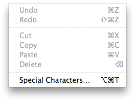
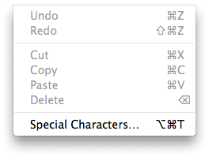

GeoTag Help: Menu items
GeoTag uses a small number of the standard menu items. The menu bar looks like:
The GeoTag, File, and Edit menus look like:

 

- About GeoTag: opens the About window. See Window layout for an example.
- Preferences: opens the Preferences window. See Preferences for more information.
- Open: select files for processing. See Loading images for more information.
- Close: close the window and quit the application. Close, the window close button, and the Quit menu items all terminate the application. You will be warned if there are any unsaved location changes.
- Save: update the meta-data of images that were changed since the last time you selected Save or Revert to Saved. Note: you can not undo past a Save operation.
- Revert to Saved: throw away all location changes made since the last time you selected Save or Revert to Saved. Note: you can not undo past a Revert to Saved operation.
- Clear image list: Empty the list of images. This menu item is not active if any of the images in the list have unsaved changes.
- Undo and Redo: Location changes can be reverted using Undo and re-applied using Redo.
- Cut, Copy, Paste, and Delete: these menu selections only work on
the location fields of an image. If you paste into another application
the data will consist of the latitude in decimal format, white
space, and the longitude also in decimal format. You can paste data
into GeoTag if it follows that convention. Sample paste data:
40.280000 -123.864333